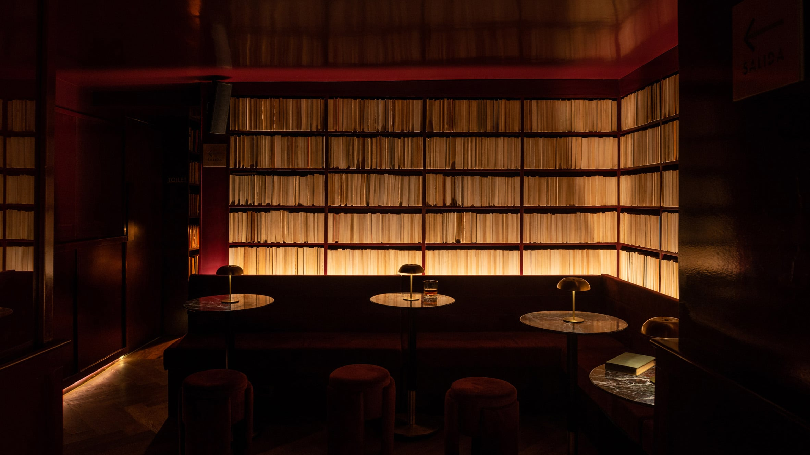
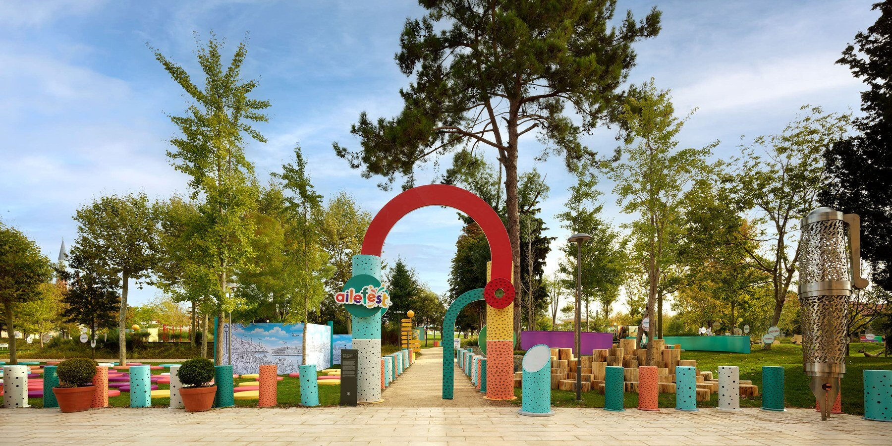
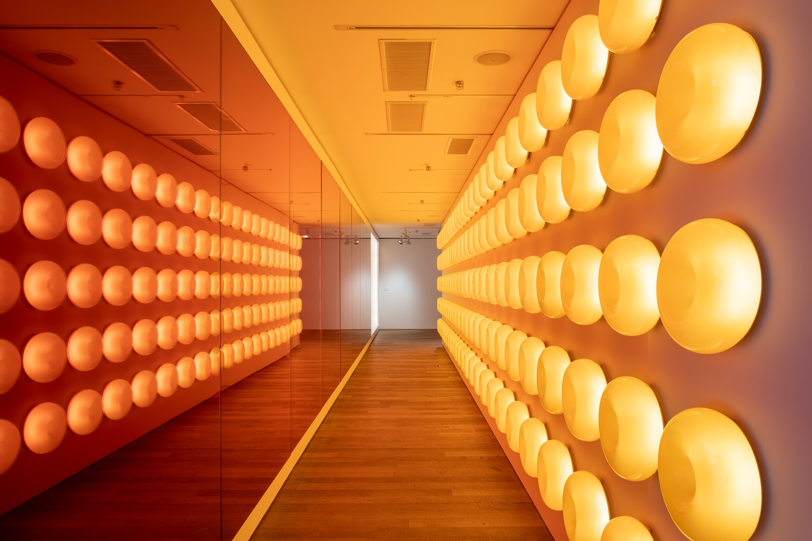
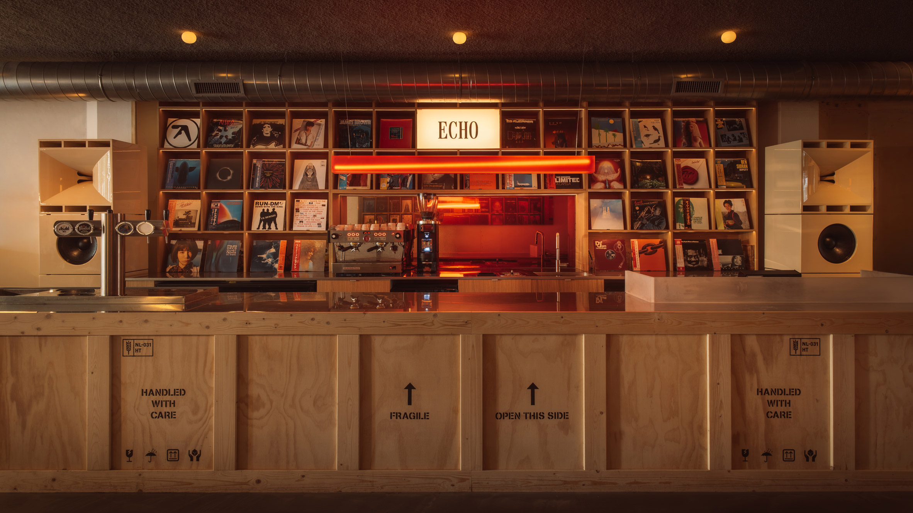

THE ISSUE 25 stories
Books at the bar, and a Sunday in full

Libreria Valladolid, the basement bar Em-Estudio has lined with walls of books in Mexico City's Roma neighbourhood (story 1). Image: Em-Estudio / Dezeen. Source Sunday, November 1, 2026 · A daily snapshot, not a live feed
Design and architecture
Design and architecture 01 1 min read
A Mexico City bar lined with walls of books Em-Estudio's Libreria Valladolid, a basement bar in Roma, channels the neighbourhood's vintage bookshops.
Read the briefing + Em-Estudio has designed Libreria Valladolid, a basement bar in Mexico City's Roma neighbourhood lined with walls of books.
What happened: The Mexico City studio fitted the basement bar with floor-to-ceiling shelves stocked with books, a nod to the vintage bookshops the area is known for.Details: Dezeen's photographs show the shelving wrapping the room, with the bar counter set among the spines.Why it matters: A confident piece of atmosphere-first hospitality design from one of the city's younger studios.Keep in mind: This is a newly opened venue covered from the architect's photographs; judge the mood in person.2026-10-31 · Dezeen
Design and architecture 02 1 min read
Dubai Design Week opens its 12th edition Downtown Design anchors six days of installations across Dubai Design District, 3 to 8 November.
Read the briefing + Dubai Design Week returns for its 12th edition from 3 to 8 November, centred on Dubai Design District.
What happened: The festival announced its programme, with the Downtown Design fair as the headline and installations across the district.Details: Dezeen names participating studios including Nikken Sekkei and Sobokuya among the district interventions.Why it matters: The region's biggest design week is now a reliable gauge of Middle Eastern design ambition.Keep in mind: Dates and line-up are the festival's own; edition number as stated by the organiser.2026-10-30 · Dezeen
Design and architecture 03 1 min read
Chromatic pavilions take over Istanbul's Rami Library Milimetrik Architects turns the historic library's courtyard into modular play structures for AileFest.
Read the briefing + Milimetrik Architects has converted the courtyard of Istanbul's historic Rami Library into chromatic pavilions and modular play structures for AileFest 2026.
What happened: The temporary installation fills the courtyard of the former barracks turned library with colour-blocked structures.Details: Designboom reports about 825,000 visitors over the festival's eleven days.Why it matters: A serious adaptive-reuse landmark gets a light, family-scaled layer without touching the fabric.Keep in mind: Visitor figures come from the festival's coverage, not an independent count.2026-10-31 · designboom

Rami Library's courtyard, activated for AileFest by Milimetrik Architects (story 3). Image: Milimetrik Architects / designboom. Source
Design and architecture 04 1 min read
Hong Kong Airport's new Terminal 2, in photographs Aedas tops the expansion with an undulating Feather Roof and tree-trunk columns.
Read the briefing + Domus has published a photo essay of the Aedas-designed Terminal 2 expansion at Hong Kong International Airport.
What happened: The terminal expansion opened for departures in May 2026; Domus now documents the finished spaces.Details: The undulating Feather Roof and branching, tree-trunk columns structure the departures hall.Why it matters: One of Asia's largest airport projects of the decade, seen properly for the first time.Keep in mind: A photo essay, not a critical review; the verdict is in the images.2026-10-30 · Domus
Design and architecture 05 1 min read
A quiet garden studio in Highbury O'Sullivan Skoufoglou builds a brick-and-timber retreat for a filmmaker and an artist.
Read the briefing + O'Sullivan Skoufoglou Architects has completed a brick-and-timber garden studio in Highbury, London, for a filmmaker and artist couple.
What happened: The studio sits at the end of a London garden, detailed in brick with a timber interior.Details: Dezeen describes the brief as a workspace that stays, in the architects' words, quiet yet present.Why it matters: Small, precise domestic work is where this London practice does its best thinking.Keep in mind: A completed private commission; not open to visit.2026-10-31 · Dezeen
Craft and objects
Craft and objects 06 1 min read
The Futuro house, shrunk to a bedside lamp WOLOLOW 2.0 miniaturises Matti Suuronen's 1968 UFO house into an elliptical tabletop light.
Read the briefing + WOLOLOW 2.0 is a tabletop lamp that miniaturises Matti Suuronen's 1968 Futuro house.
What happened: Arthur Koshatahyan and Kostya Trunov designed the lamp with the Futuro's elliptical porthole hull and tripod legs.Details: Designboom shows the piece glowing from its portholes like the original fiberglass house at night.Why it matters: Space-age optimism, domesticated; a knowing tribute rather than a pastiche.Keep in mind: A design-object release; availability details sit with the designers.2026-10-31 · designboom
Craft and objects 07 1 min read
Inflated steel shelves, made on camera Connor Holland hydroforms sheet metal into plump display shelves for a Turin venue.
Read the briefing + UK industrial designer Connor Holland has shown how he makes his inflated steel display shelves.
What happened: Core77 documents Holland hydroforming and aeroforming sheet metal into pillowy steel volumes.Details: The shelves were commissioned for a venue in Turin; the process video shows the inflation step by step.Why it matters: Process transparency as craft: the making is the message.Keep in mind: A commissioned edition, not a production line.2026-10-29 · Core77
Craft and objects 08 1 min read
Packable hangers for fashion week Rasmus Palmgren designs portable hangers that solve backstage transport.
Read the briefing + Copenhagen furniture designer Rasmus Palmgren has designed packable, portable hangers.
What happened: The hangers break down flat so collections can travel between shows without a wardrobe department's worth of kit.Details: Core77 reports the design grew out of fashion-week backstage logistics.Why it matters: A tiny, well-observed problem solved by a furniture maker rather than a luggage brand.Keep in mind: A niche tool; its audience is small but devoted.2026-10-29 · Core77
Craft and objects 09 1 min read
Delsey goes aluminium in its 80th year Alu'r is the Paris luggage brand's first all-aluminium collection.
Read the briefing + Delsey has launched Alu'r, its first aluminium luggage collection, in the Paris brand's 80th year.
What happened: Wallpaper reports the Alu'r line brings anodised aluminium shells to a brand built on polycarbonate.Details: The collection enters a category long defined by Rimowa, at French high-street-adjacent pricing.Why it matters: A heritage trunk maker betting its anniversary on a material shift.Keep in mind: Pricing and availability are the brand's own announcements.2026-10-31 · Wallpaper*
Craft and objects 10 1 min read
Perfume packaged like a handwritten letter Studio Lotta Nieminen wraps Scandinavian scent Aplomb in wax seals and postal stamps.
Read the briefing + Studio Lotta Nieminen has designed packaging for the Scandinavian perfume Aplomb.
What happened: The identity uses wax seals, postal stamps and correspondence cues to frame each scent as a letter.Details: It's Nice That highlights the intimacy of the unboxing, down to the stationery-grade paper.Why it matters: Packaging that slows the hand is rare in a category built on speed.Keep in mind: A branding case study from the studio's side; commercial performance is not reported.2026-10-29 · It's Nice That
Art and exhibitions
Art and exhibitions 11 1 min read
MoMA, the Pompidou and M+ pool their collections Three museums on three continents will treat their holdings as one shared collection.
Read the briefing + MoMA, the Centre Pompidou and M+ have formed an alliance to treat their holdings as one shared collection.
What happened: Artnews reports the three institutions will coordinate acquisitions and long-term loans across New York, Paris and Hong Kong.Details: Long-term loans begin in late 2027; the museums cite a combined 10 million annual visitors.Why it matters: An unprecedented structure that could redraw how modern collections circulate.Keep in mind: The visitor figure is the museums' own; the first loans are still a year away.2026-10-30 · ARTnews
Art and exhibitions 12 1 min read
Sabine Marcelis floods Zurich with light and colour Her first museum solo runs at the Museum für Gestaltung until 4 April 2027.
Read the briefing + Sabine Marcelis has opened Light and Color, her first museum solo exhibition, at the Museum für Gestaltung Zürich.
What happened: The show gathers 15 years of her work in cast resin and light, running from 30 October 2026 to 4 April 2027.Details: Wallpaper describes a tunnel of her Ikea lamps and a room given over to lava lamps.Why it matters: A mid-career consolidation for one of the most collectible designers working.Keep in mind: Dates as published by the museum; the Ikea pieces are shown as design objects.2026-10-31 · Wallpaper*

Inside Sabine Marcelis's Light and Color in Zurich (story 12). Image: Museum für Gestaltung Zürich / Wallpaper*. Source
Art and exhibitions 13 1 min read
Sophie Calle takes over MAXXI Italy's largest Calle exhibition spans forty years of ended loves, grief and death.
Read the briefing + MAXXI in Rome is staging Italy's largest Sophie Calle exhibition to date.
What happened: The show gathers eight projects across more than forty years, on marriages, breakups and funerals.Details: Domus walks the sequence room by room, from the early followings to the recent works on her mother's death.Why it matters: The defining confessional artist, read at full scale in a country that has shown her only in fragments.Keep in mind: An exhibition review; run dates sit with MAXXI.2026-10-28 · Domus
Art and exhibitions 14 1 min read
Giacometti heads to Milan Palazzo Reale announces Alberto Giacometti and Italy, opening 25 February 2027.
Read the briefing + Palazzo Reale in Milan has announced Alberto Giacometti and Italy for 25 February 2027.
What happened: The exhibition will bring over a hundred works, including Walking Man and The Nose, to Milan.Details: Domus frames the show around Giacometti's Italian relationships and the Biennale years.Why it matters: A major Giacometti survey in Italy is rare; this one arrives with heavyweight loans.Keep in mind: Announced, not open; the checklist can shift before February.2026-10-30 · Domus
Art and exhibitions 15 1 min read
Socrates Sculpture Park rebuilds against the flood The Queens waterfront park adds a resilient acre and three large Mark di Suvero works.
Read the briefing + New York's Socrates Sculpture Park is rebuilding for flood resilience and expanding.
What happened: The Art Newspaper reports a resilience plan for the Long Island City shoreline site plus a one-acre expansion.Details: Three large Mark di Suvero works anchor the new area, honouring the park's co-founder.Why it matters: A beloved artist-built park treating climate adaptation as design, not retreat.Keep in mind: A plan in progress; completion dates sit with the park.2026-10-29 · The Art Newspaper
Cities, travel and table
Cities, travel and table 16 1 min read
Loop Barcelona turns 24 The artists' cinema platform runs 10 to 21 November across the city.
Read the briefing + Loop Barcelona, the platform for artists' film and video, opens its 24th edition from 10 to 21 November.
What happened: The festival and fair spread across city venues, pairing screenings with a professional programme.Details: E-flux carries the edition's announcement with its full dates.Why it matters: Still the most focused meeting point for artists' cinema anywhere.Keep in mind: Dates as announced; venue list sits with the festival.2026-10-29 · e-flux
Cities, travel and table 17 1 min read
Rotterdam gets a Tokyo-style listening bar Echo opens in the Groot Handelsgebouw with custom sound and ombré mirrors.
Read the briefing + Echo, a Tokyo-inspired listening bar, has opened in Rotterdam's Groot Handelsgebouw.
What happened: Dezeen reports the bar pairs a bespoke sound system with interiors washed in gradient colour.Details: The ombré mirrors carry a family resemblance to Sabine Marcelis's resin work, story 12.Why it matters: The listening-bar format keeps maturing outside Japan, with serious acoustic intent.Keep in mind: Newly opened; evening programming details sit with the venue.2026-10-30 · Dezeen

Echo, the Tokyo-inspired listening bar in Rotterdam's Groot Handelsgebouw (story 17). Image: Echo / Dezeen. Source
Cities, travel and table 18 1 min read
Mimi Kakushi lands in Miami Pirajean Lees brings 1920s Osaka glamour to the Delano's new dining room.
Read the briefing + Mimi Kakushi has opened its first US outpost at the Delano in Miami Beach, designed by Pirajean Lees.
What happened: The Dubai-born Japanese restaurant takes over a dining room at the renovated Delano.Details: Design Milk describes 1920s Osaka glamour: dark timber, low light, jazz-age detailing.Why it matters: A hotel dining scene reset at one of Miami's most storied addresses.Keep in mind: An opening announcement; booking details sit with the restaurant.2026-10-29 · Design Milk
Cities, travel and table 19 1 min read
Viking's ships as floating Scandinavian design Pale wood, full-height glass and quiet dining rooms across the fleet.
Read the briefing + Design Milk looks at how Viking's river and ocean ships function as showcases of Scandinavian design.
What happened: The feature reads the fleet's interiors as a consistent language: pale wood, glass walls, understated dining rooms.Details: The design DNA traces to the line's Norwegian roots rather than cruise-ship convention.Why it matters: A useful reference for how restraint scales across a whole fleet.Keep in mind: A brand-adjacent feature; the ships are working vessels, not showrooms.2026-10-29 · Design Milk
Cities, travel and table 20 1 min read
Frank Lloyd Wright's only planetarium reopens The 1958 Miller Planetarium at Florida Southern College returns after restoration.
Read the briefing + Frank Lloyd Wright's only planetarium, the 1958 Miller Planetarium at Florida Southern College, has reopened after restoration.
What happened: Domus reports the restored building reopens with new projection systems inside Wright's original shell.Details: The planetarium sits on the largest single-site collection of Wright architecture in the world.Why it matters: A niche typology in the Wright canon, brought back to working order.Keep in mind: Reopening status per the college's coverage; visit logistics sit with Florida Southern.2026-10-28 · Domus
Books, print and photography
Books, print and photography 21 1 min read
Platon publishes PAROS 225 black-and-white photographs of the island that raised him, from MW Editions.
Read the briefing + Portraitist Platon has published PAROS, his most personal monograph, with MW Editions.
What happened: The book gathers 225 black-and-white photographs made across four decades on the Greek island.Details: Yatzer presents it as the counterpoint to his portrait practice: no sitters, only place.Why it matters: A major portraitist's private work, published at monograph scale.Keep in mind: Published October 2026; availability via the publisher.2026-10-30 · Yatzer
Books, print and photography 22 1 min read
Deutsche Börse Prize names its 2027 shortlist Afshar, Kang, Kurmaz and Vitale, including an 800-page photobook on the Russia-Ukraine war.
Read the briefing + The Deutsche Börse Photography Foundation Prize has announced its 2027 shortlist.
What happened: Hoda Afshar, Lotus L. Kang, Sasha Kurmaz and Salvatore Vitale make the four-artist list.Details: The Art Newspaper singles out an 800-page photobook on the Russia-Ukraine war and photography-as-sculpture among the nominated projects.Why it matters: The shortlist is a reliable map of where documentary photography is heading.Keep in mind: A shortlist announcement; the exhibition and winner follow next year.2026-10-29 · The Art Newspaper
Books, print and photography 23 1 min read
Sunil Gupta's five decades at Kettle's Yard Life with a Camera, 1970-Now, brings an intimate retrospective to Cambridge.
Read the briefing + Sunil Gupta has gathered five decades of work in Life with a Camera, 1970-Now, at Kettle's Yard in Cambridge.
What happened: The retrospective traces Gupta's photography from 1970 to the present.Details: Wallpaper reads it as an intimate, autobiographical survey rather than a greatest-hits hang.Why it matters: A overdue full-length look at a central figure in queer documentary photography.Keep in mind: An exhibition review; run dates sit with Kettle's Yard.2026-10-31 · Wallpaper*
Books, print and photography 24 1 min read
Charlotte Higgins on Ukraine's artists A new book asks how three years of war reporting become cultural memory.
Read the briefing + Charlotte Higgins has published a new book on how Ukraine's artists are shaping the memory of the war.
What happened: The book draws on three years of reporting trips through wartime Ukraine.Details: The Art Newspaper interviews Higgins on artists working through and against the invasion.Why it matters: One of Britain's best culture writers on the hardest subject in Europe.Keep in mind: A book announcement with interview; publication details sit with the publisher.2026-10-30 · The Art Newspaper
Books, print and photography 25 1 min read
Henry Chalfant's subway photos at life size STRAAT in Amsterdam shows the landmark 1980s graffiti photographs at full scale.
Read the briefing + Henry Chalfant's landmark 1980s New York subway graffiti photographs are on show at STRAAT in Amsterdam.
What happened: The museum presents Chalfant's train photographs at life size, the scale they were made to record.Details: Creative Boom frames the show, titled around the idea that art is not a crime, as a document of a vanished scene.Why it matters: The definitive record of subway art, shown as it should be: big.Keep in mind: An exhibition announcement; run dates sit with STRAAT.2026-10-29 · Creative Boom